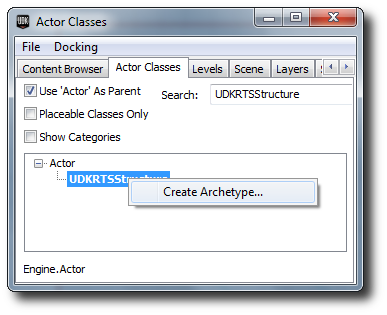

UDN
Search public documentation:
DevelopmentKitGemsRTSStarterKit
日本語訳
中国翻译
한국어
Interested in the Unreal Engine?
Visit the Unreal Technology site.
Looking for jobs and company info?
Check out the Epic games site.
Questions about support via UDN?
Contact the UDN Staff
中国翻译
한국어
Interested in the Unreal Engine?
Visit the Unreal Technology site.
Looking for jobs and company info?
Check out the Epic games site.
Questions about support via UDN?
Contact the UDN Staff
UE3 Home > Unreal Development Kit Gems > RTS Starter Kit
UE3 Home > Getting Started: Programming > RTS Starter Kit
UE3 Home > Getting Started: Programming > RTS Starter Kit
RTS Starter Kit
Last tested against UDK Nov, 2011
- RTS Starter Kit
- Overview
- What's included?
- Code structure
- How to detect what is "underneath" the mouse/finger?
- How do the buttons appear on the HUD when selecting a structure/unit?
- How do the HUD actions do anything when they are pressed?
- How is resources handled?
- How does the game handle the creation of units?
- How does the game handle the creation of structures?
- How does the AI work?
- How does the upgrade system work?
- How does the weapon system work?
- How does the commander voice over system work?
- How is music played back?
- How to create a game using this starter kit?
- How to use this starter kit?
- Downloads
Overview
This starter kit has example code which you can use as a starting point to develop a real time strategy game such as Hostile Worlds which is under development and made with UDK.
What's included?
Unlike the Platformer Starter Kit or the Racer Starter Kit; there is a lot of code and content in this Starter Kit. It also has a few advanced features that are not really related to real time strategy games, but could help with other areas of development as well.
- Platform abstraction - The RTS Starter Kit is able to distinguish which platform the player is playing on. Depending on which platform the player is using, different player controllers and HUD classes are used. However, the PC and Console platform classes have only been stubbed out. Currently, only the mobile platform is fully supported.
- Camera - The RTS Starter Kit has an example of how you would create a camera to act like an birds eye view camera. It supports panning, touch panning and zooming.
- Structures - The RTS Starter Kit has example code which handles structures that the player can build.
- Units - The RTS Starter Kit has example code which handles units that the player can issue commands to.
- Skills - The RTS Starter Kit has example code which handles skills for units.
- Resource Management - The RTS Starter Kit has example code which handles resources for players.
- AI - The RTS Starter Kit has example code which demonstrates how you can create an enemy AI player that is capable of building structures, units and fight against you.
- Upgrades - The RTS Starter Kit has example code which shows you how to create upgrades for your units.
- Structure Upgrades - The RTS Starter Kit has example code which shows you how to create structures which can upgrade themselves into more advanced forms.
- Networking - The RTS Starter Kit has been built with networking in mind, and thus has replication set up for you.
- Documentation - The RTS Starter Kit is fully documented using a style similar to Javadocs.
- UI - The RTS Starter Kit has a small custom UI code base which deals with simple buttons.
Code structure
The RTS Starter Kit is a large, complex project and thus understanding all portions is important before you begin extending and or modifying the Starter Kit to create your game.
How to detect what is "underneath" the mouse/finger?
The mouse interface code works differently compared to the Mouse Interface Development Kit Gem. In the case of an RTS game, you don't really want far away units to be difficult to select, or you may want to prioritize different things to be selected at any given time. For example, you may want to make units more important than structures, which are more important than resource points. The RTS Starter Kit resolves these problems by creating screen space boxes representing dimensions of the units on screen. To solve the problem of far away units having a too small a screen box, artificial padding can be added to the box dimensions (however, during development this problem did not really occur because of the camera style). To solve the priority problem, the units were iterated over first, and then structures and then resources. Since touches are already captured in screen space, from there point within box comparisons were done to find out what the mouse/finger was on top of. If the mouse/finger did not touch anything, then it is assumed that it must have touched the world. In this code snippet, the code iterates through all of the resources in the world and calculates the screen bounding box for them.
// Calculate the screen bounding boxes for all of the resources
for (i = 0; i < UDKRTSGameReplicationInfo.Resources.Length; ++i)
{
if (UDKRTSGameReplicationInfo.Resources[i] != None)
{
UDKRTSGameReplicationInfo.Resources[i].ScreenBoundingBox = CalculateScreenBoundingBox(Self, UDKRTSGameReplicationInfo.Resources[i], UDKRTSGameReplicationInfo.Resources[i].CollisionCylinder);
// Render the debug bounding box
if (ShouldDisplayDebug('BoundingBoxes'))
{
Canvas.SetPos(UDKRTSGameReplicationInfo.Resources[i].ScreenBoundingBox.Min.X, UDKRTSGameReplicationInfo.Resources[i].ScreenBoundingBox.Min.Y);
Canvas.DrawColor = UDKRTSGameReplicationInfo.Resources[i].BoundingBoxColor;
Canvas.DrawBox(UDKRTSGameReplicationInfo.Resources[i].ScreenBoundingBox.Max.X - UDKRTSGameReplicationInfo.Resources[i].ScreenBoundingBox.Min.X, UDKRTSGameReplicationInfo.Resources[i].ScreenBoundingBox.Max.Y - UDKRTSGameReplicationInfo.Resources[i].ScreenBoundingBox.Min.Y);
}
}
}
function Box CalculateScreenBoundingBox(HUD HUD, Actor Actor, PrimitiveComponent PrimitiveComponent)
{
local Box ComponentsBoundingBox, OutBox;
local Vector BoundingBoxCoordinates[8];
local int i;
if (HUD == None || PrimitiveComponent == None || Actor == None || WorldInfo.TimeSeconds - Actor.LastRenderTime >= 0.1f)
{
OutBox.Min.X = -1.f;
OutBox.Min.Y = -1.f;
OutBox.Max.X = -1.f;
OutBox.Max.Y = -1.f;
return OutBox;
}
ComponentsBoundingBox.Min = PrimitiveComponent.Bounds.Origin - PrimitiveComponent.Bounds.BoxExtent;
ComponentsBoundingBox.Max = PrimitiveComponent.Bounds.Origin + PrimitiveComponent.Bounds.BoxExtent;
// Z1
// X1, Y1
BoundingBoxCoordinates[0].X = ComponentsBoundingBox.Min.X;
BoundingBoxCoordinates[0].Y = ComponentsBoundingBox.Min.Y;
BoundingBoxCoordinates[0].Z = ComponentsBoundingBox.Min.Z;
BoundingBoxCoordinates[0] = HUD.Canvas.Project(BoundingBoxCoordinates[0]);
// X2, Y1
BoundingBoxCoordinates[1].X = ComponentsBoundingBox.Max.X;
BoundingBoxCoordinates[1].Y = ComponentsBoundingBox.Min.Y;
BoundingBoxCoordinates[1].Z = ComponentsBoundingBox.Min.Z;
BoundingBoxCoordinates[1] = HUD.Canvas.Project(BoundingBoxCoordinates[1]);
// X1, Y2
BoundingBoxCoordinates[2].X = ComponentsBoundingBox.Min.X;
BoundingBoxCoordinates[2].Y = ComponentsBoundingBox.Max.Y;
BoundingBoxCoordinates[2].Z = ComponentsBoundingBox.Min.Z;
BoundingBoxCoordinates[2] = HUD.Canvas.Project(BoundingBoxCoordinates[2]);
// X2, Y2
BoundingBoxCoordinates[3].X = ComponentsBoundingBox.Max.X;
BoundingBoxCoordinates[3].Y = ComponentsBoundingBox.Max.Y;
BoundingBoxCoordinates[3].Z = ComponentsBoundingBox.Min.Z;
BoundingBoxCoordinates[3] = HUD.Canvas.Project(BoundingBoxCoordinates[3]);
// Z2
// X1, Y1
BoundingBoxCoordinates[4].X = ComponentsBoundingBox.Min.X;
BoundingBoxCoordinates[4].Y = ComponentsBoundingBox.Min.Y;
BoundingBoxCoordinates[4].Z = ComponentsBoundingBox.Max.Z;
BoundingBoxCoordinates[4] = HUD.Canvas.Project(BoundingBoxCoordinates[4]);
// X2, Y1
BoundingBoxCoordinates[5].X = ComponentsBoundingBox.Max.X;
BoundingBoxCoordinates[5].Y = ComponentsBoundingBox.Min.Y;
BoundingBoxCoordinates[5].Z = ComponentsBoundingBox.Max.Z;
BoundingBoxCoordinates[5] = HUD.Canvas.Project(BoundingBoxCoordinates[5]);
// X1, Y2
BoundingBoxCoordinates[6].X = ComponentsBoundingBox.Min.X;
BoundingBoxCoordinates[6].Y = ComponentsBoundingBox.Max.Y;
BoundingBoxCoordinates[6].Z = ComponentsBoundingBox.Max.Z;
BoundingBoxCoordinates[6] = HUD.Canvas.Project(BoundingBoxCoordinates[6]);
// X2, Y2
BoundingBoxCoordinates[7].X = ComponentsBoundingBox.Max.X;
BoundingBoxCoordinates[7].Y = ComponentsBoundingBox.Max.Y;
BoundingBoxCoordinates[7].Z = ComponentsBoundingBox.Max.Z;
BoundingBoxCoordinates[7] = HUD.Canvas.Project(BoundingBoxCoordinates[7]);
// Find the left, top, right and bottom coordinates
OutBox.Min.X = HUD.Canvas.ClipX;
OutBox.Min.Y = HUD.Canvas.ClipY;
OutBox.Max.X = 0;
OutBox.Max.Y = 0;
// Iterate though the bounding box coordinates
for (i = 0; i < ArrayCount(BoundingBoxCoordinates); ++i)
{
// Detect the smallest X coordinate
if (OutBox.Min.X > BoundingBoxCoordinates[i].X)
{
OutBox.Min.X = BoundingBoxCoordinates[i].X;
}
// Detect the smallest Y coordinate
if (OutBox.Min.Y > BoundingBoxCoordinates[i].Y)
{
OutBox.Min.Y = BoundingBoxCoordinates[i].Y;
}
// Detect the largest X coordinate
if (OutBox.Max.X < BoundingBoxCoordinates[i].X)
{
OutBox.Max.X = BoundingBoxCoordinates[i].X;
}
// Detect the largest Y coordinate
if (OutBox.Max.Y < BoundingBoxCoordinates[i].Y)
{
OutBox.Max.Y = BoundingBoxCoordinates[i].Y;
}
}
// Check if the bounding box is within the screen
if ((OutBox.Min.X < 0 && OutBox.Max.X < 0) || (OutBox.Min.X > HUD.Canvas.ClipX && OutBox.Max.X > HUD.Canvas.ClipX) || (OutBox.Min.Y < 0 && OutBox.Max.Y < 0) || (OutBox.Min.Y > HUD.Canvas.ClipY && OutBox.Max.Y > HUD.Canvas.ClipY))
{
OutBox.Min.X = -1.f;
OutBox.Min.Y = -1.f;
OutBox.Max.X = -1.f;
OutBox.Max.Y = -1.f;
}
else
{
// Clamp the bounding box coordinates
OutBox.Min.X = FClamp(OutBox.Min.X, 0.f, HUD.Canvas.ClipX);
OutBox.Max.X = FClamp(OutBox.Max.X, 0.f, HUD.Canvas.ClipX);
OutBox.Min.Y = FClamp(OutBox.Min.Y, 0.f, HUD.Canvas.ClipY);
OutBox.Max.Y = FClamp(OutBox.Max.Y, 0.f, HUD.Canvas.ClipY);
}
return OutBox;
}
// Check if we touch any game play relevant objects
if (PlayerReplicationInfo != None)
{
UDKRTSTeamInfo = UDKRTSTeamInfo(PlayerReplicationInfo.Team);
if (UDKRTSTeamInfo != None)
{
UDKRTSMobileHUD = UDKRTSMobileHUD(MyHUD);
if (UDKRTSMobileHUD != None)
{
// Are we touching a pawn?
if (TouchEvent.Response == ETR_None && UDKRTSTeamInfo.Pawns.Length > 0)
{
for (i = 0; i < UDKRTSTeamInfo.Pawns.Length; ++i)
{
if (UDKRTSTeamInfo.Pawns[i] != None && class'UDKRTSMobileHUD'.static.IsPointWithinBox(TouchLocation, UDKRTSTeamInfo.Pawns[i].ScreenBoundingBox) && TouchEvents.Find('AssociatedActor', UDKRTSTeamInfo.Pawns[i]) == INDEX_NONE)
{
UDKRTSTeamInfo.Pawns[i].Selected();
UDKRTSTeamInfo.Pawns[i].RegisterHUDActions(UDKRTSMobileHUD);
TouchEvent.AssociatedActor = UDKRTSTeamInfo.Pawns[i];
TouchEvent.Response = ETR_Pawn;
break;
}
}
}
// Are we touching a structure
if (TouchEvent.Response == ETR_None && UDKRTSTeamInfo.Structures.Length > 0)
{
for (i = 0; i < UDKRTSTeamInfo.Structures.Length; ++i)
{
if (class'UDKRTSMobileHUD'.static.IsPointWithinBox(TouchLocation, UDKRTSTeamInfo.Structures[i].ScreenBoundingBox) && TouchEvents.Find('AssociatedActor', UDKRTSTeamInfo.Structures[i]) == INDEX_NONE)
{
UDKRTSTeamInfo.Structures[i].Selected();
UDKRTSTeamInfo.Structures[i].RegisterHUDActions(UDKRTSMobileHUD);
TouchEvent.AssociatedActor = UDKRTSTeamInfo.Structures[i];
TouchEvent.Response = ETR_Structure;
break;
}
}
}
}
}
}
How do the buttons appear on the HUD when selecting a structure/unit?
In the RTS Starter Kit, buttons are called HUD actions. A HUD action is a struct which is defined in UDKRTSHUD.uc. In this code snippet, you can see that HUD actions simply define a texture and a set of texture UV coordinates. These variables are exposed to Unreal Editor, to allow the game developer set these values. The other four variables are used in game to perform other functions and will be explained a little later.
// HUD actions on the HUD
struct SHUDAction
{
var() Texture2D Texture;
var() float U;
var() float V;
var() float UL;
var() float VL;
var EHUDActionReference Reference;
var int Index;
var bool PostRender;
var delegate<IsHUDActionActive> IsHUDActionActiveDelegate;
};
// HUD actions that are associated to an actor on the HUD
struct SAssociatedHUDAction
{
var Actor AssociatedActor;
var array<SHUDAction> HUDActions;
};
simulated function RegisterHUDActions(UDKRTSMobileHUD HUD)
{
local int i;
local SHUDAction SendHUDAction;
if (HUD == None || OwnerReplicationInfo == None || HUD.AssociatedHUDActions.Find('AssociatedActor', Self) != INDEX_NONE || Health <= 0)
{
return;
}
// Register the camera center HUD action
if (Portrait.Texture != None)
{
SendHUDAction = Portrait;
SendHUDAction.Reference = EHAR_Center;
SendHUDAction.Index = -1;
SendHUDAction.PostRender = true;
HUD.RegisterHUDAction(Self, SendHUDAction);
}
}
function RegisterHUDAction(Actor AssociatedActor, SHUDAction HUDAction)
{
local SAssociatedHUDAction AssociatedHUDAction;
local int IndexA, IndexB;
// Get index A
IndexA = AssociatedHUDActions.Find('AssociatedActor', AssociatedActor);
if (IndexA != INDEX_NONE)
{
// Get index B
IndexB = AssociatedHUDActions[IndexA].HUDActions.Find('Reference', HUDAction.Reference);
if (IndexB != INDEX_NONE && AssociatedHUDActions[IndexA].HUDActions[IndexB].Index == HUDAction.Index)
{
return;
}
}
if (IndexA != INDEX_NONE)
{
// Add the associated HUD action
AssociatedHUDActions[IndexA].HUDActions.AddItem(HUDAction);
}
else
{
// Add the associated HUD action
AssociatedHUDAction.AssociatedActor = AssociatedActor;
AssociatedHUDAction.HUDActions.AddItem(HUDAction);
AssociatedHUDActions.AddItem(AssociatedHUDAction);
}
}
event PostRender()
{
Super.PostRender();
if (AssociatedHUDActions.Length > 0)
{
Offset.X = PlayableSpaceLeft;
Offset.Y = 0;
Size.X = SizeX * 0.0625f;
Size.Y = Size.X;
for (i = 0; i < AssociatedHUDActions.Length; ++i)
{
if (AssociatedHUDActions[i].AssociatedActor != None && AssociatedHUDActions[i].HUDActions.Length > 0)
{
Offset.X = HUDProperties.ScrollWidth;
for (j = 0; j < AssociatedHUDActions[i].HUDActions.Length; ++j)
{
if (AssociatedHUDActions[i].HUDActions[j].IsHUDActionActiveDelegate != None)
{
IsHUDActionActive = AssociatedHUDActions[i].HUDActions[j].IsHUDActionActiveDelegate;
if (!IsHUDActionActive(AssociatedHUDActions[i].HUDActions[j].Reference, AssociatedHUDActions[i].HUDActions[j].Index, false))
{
Canvas.SetDrawColor(191, 191, 191, 191);
}
else
{
Canvas.SetDrawColor(255, 255, 255);
}
IsHUDActionActive = None;
}
else
{
Canvas.SetDrawColor(255, 255, 255);
}
Canvas.SetPos(Offset.X, Offset.Y);
Canvas.DrawTile(AssociatedHUDActions[i].HUDActions[j].Texture, Size.X, Size.Y, AssociatedHUDActions[i].HUDActions[j].U, AssociatedHUDActions[i].HUDActions[j].V, AssociatedHUDActions[i].HUDActions[j].UL, AssociatedHUDActions[i].HUDActions[j].VL);
if (AssociatedHUDActions[i].HUDActions[j].PostRender)
{
UDKRTSHUDActionInterface = UDKRTSHUDActionInterface(AssociatedHUDActions[i].AssociatedActor);
if (UDKRTSHUDActionInterface != None)
{
UDKRTSHUDActionInterface.PostRenderHUDAction(Self, AssociatedHUDActions[i].HUDActions[j].Reference, AssociatedHUDActions[i].HUDActions[j].Index, Offset.X, Offset.Y, Size.X, Size.Y);
}
}
Offset.X += Size.X;
}
}
Offset.Y += Size.Y;
}
}
}
simulated function PostRenderHUDAction(HUD HUD, EHUDActionReference Reference, int Index, int PosX, int PosY, int SizeX, int SizeY)
{
local float HealthPercentage;
local float HealthBarWidth, HealthBarHeight;
if (HUD == None || HUD.Canvas == None || Health <= 0)
{
return;
}
if (Reference == EHAR_Center)
{
// Get the health bar percentage
HealthPercentage = float(Health) / float(HealthMax);
// Render the health bar border
HealthBarWidth = SizeX - 2;
HealthBarHeight = 8;
HUD.Canvas.SetPos(PosX + 1, PosY + SizeY - HealthBarHeight - 1);
HUD.Canvas.SetDrawColor(0, 0, 0, 191);
HUD.Canvas.DrawBox(HealthBarWidth, HealthBarHeight);
HealthBarWidth -= 4;
HealthBarHeight -= 4;
// Render the missing health
HUD.Canvas.SetPos(PosX + 3, PosY + SizeY - HealthBarHeight - 3);
HUD.Canvas.SetDrawColor(0, 0, 0, 127);
HUD.Canvas.DrawRect(HealthBarWidth, HealthBarHeight);
// Render the health bar
HUD.Canvas.SetPos(PosX + 3, PosY + SizeY - HealthBarHeight - 3);
HUD.Canvas.SetDrawColor(255 * (1.f - HealthPercentage), 255 * HealthPercentage, 0, 191);
HUD.Canvas.DrawRect(HealthBarWidth * HealthPercentage, HealthBarHeight);
}
}
How do the HUD actions do anything when they are pressed?
When a touch input is received by UDKRTSMobilePlayerController, it first passes this to the HUD to check whether the touch location is within any the HUD action's bounds. If it is, then it will first call the HUD action active delegate. This delegate allows any actor to bind to it, to influence whether the HUD action will do anything or not. If the HUD action is allowed to be activated, then it calls StartHUDAction within UDKRTSPlayerController. This is done so that the HUD action is wrapped up in a remote procedure call from the client to the server. The actor that is associated with the HUD action is then cast as a UDKRTSHUDActionInterface. If the cast succeeds, then HandleHUDAction is called to get the actor to do something.
function ETouchResponse InputTouch(Vector2D ScreenTouchLocation)
{
// Check the HUD action controls
if (AssociatedHUDActions.Length > 0)
{
Offset.X = PlayableSpaceLeft;
Offset.Y = 0;
Size.X = SizeX * 0.0625f;
Size.Y = Size.X;
for (i = 0; i < AssociatedHUDActions.Length; ++i)
{
if (AssociatedHUDActions[i].AssociatedActor != None && AssociatedHUDActions[i].HUDActions.Length > 0)
{
Offset.X = HUDProperties.ScrollWidth;
for (j = 0; j < AssociatedHUDActions[i].HUDActions.Length; ++j)
{
if (ScreenTouchLocation.X >= Offset.X && ScreenTouchLocation.Y >= Offset.Y && ScreenTouchLocation.X <= Offset.X + Size.X && ScreenTouchLocation.Y <= Offset.Y + Size.Y)
{
if (AssociatedHUDActions[i].HUDActions[j].IsHUDActionActiveDelegate != None)
{
IsHUDActionActive = AssociatedHUDActions[i].HUDActions[j].IsHUDActionActiveDelegate;
if (!IsHUDActionActive(AssociatedHUDActions[i].HUDActions[j].Reference, AssociatedHUDActions[i].HUDActions[j].Index, true))
{
IsHUDActionActive = None;
return ETR_HUDAction;
}
else
{
IsHUDActionActive = None;
}
}
// Start the HUD action
UDKRTSMobilePlayerController.StartHUDAction(AssociatedHUDActions[i].HUDActions[j].Reference, AssociatedHUDActions[i].HUDActions[j].Index, AssociatedHUDActions[i].AssociatedActor);
return ETR_HUDAction;
}
Offset.X += Size.X;
}
Offset.Y += Size.Y;
}
}
}
}
/**
* Send an action command to an actor
*
* @param Reference HUD action reference
* @param Index HUD action index
* @param Actor Associated actor
*/
simulated function StartHUDAction(EHUDActionReference Reference, int Index, Actor Actor)
{
// Sync with the server
if (Role < Role_Authority && class'UDKRTSUtility'.static.HUDActionNeedsToSyncWithServer(Reference) && UDKRTSHUDActionInterface(Actor) != None)
{
ServerHUDAction(Reference, Index, Actor);
}
BeginHUDAction(Reference, Index, Actor);
}
/**
* Sync the action command for an actor
*
* @param Reference HUD action reference
* @param Index HUD action index
* @param Actor Associated actor
*/
reliable server function ServerHUDAction(EHUDActionReference Reference, int Index, Actor Actor)
{
BeginHUDAction(Reference, Index, Actor);
}
/**
* Begin an action command to an actor
*/
simulated function BeginHUDAction(EHUDActionReference Reference, int Index, Actor Actor)
{
local UDKRTSHUDActionInterface UDKRTSHUDActionInterface;
UDKRTSHUDActionInterface = UDKRTSHUDActionInterface(Actor);
if (UDKRTSHUDActionInterface != None)
{
UDKRTSHUDActionInterface.HandleHUDAction(Reference, Index);
}
}
How is resources handled?
By default, there are three resources in the starter kit. These are all defined in UDKRTSPlayerReplicationInfo as replication notified integer variables. The replication block defines that these three variables are only to be replicated to the client, if the variables are "dirty" (different between the client and the server) and that the replication is one way (only the server replicates this variable to the client, clients cannot replicated these variables to the server).
// How much resources the player has
var RepNotify int Resources;
// How much power the player has
var RepNotify int Power;
// Players current population cap
var RepNotify int PopulationCap;
// Replication block
replication
{
if (bNetDirty && Role == Role_Authority)
Resources, Power, PopulationCap;
}
/**
* Called when a variable with the property flag "RepNotify" is replicated
*
* @param VarName Name of the variable that was replicated
*/
simulated event ReplicatedEvent(name VarName)
{
if (VarName == 'Resources')
{
// Resources variable has changed
}
else if (VarName == 'Power')
{
// Power variable has changed
}
else if (VarName == 'PopulationCap')
{
// PopulationCap variable has changed
}
else
{
Super.ReplicatedEvent(VarName);
}
}
How does the game handle the creation of units?
For players, this is done through remote procedure calls through the player controller. This is the most direct route of communication from the player to the server. The example code below demonstrates how structures form queues of constructing units, which in the end will cause the server to spawn a new unit for the player. This code snippet is found within HandleHUDAction. This function executes on both the server and client simultaneously, since the player controller synchronizes the client and server call to HandleHUDAction (see UDKRTSPlayerController.StartHUDAction(), UDKRTSPlayerController.ServerHUDAction() and UDKRTSPlayerController.BeginHUDAction()). The first thing checked is if the requested unit index is within the array bounds, and if the player is capable of constructing the unit (checks if the player has enough available resources, available population, etc). If those pass, then a sound is played back to inform the player that construction of this unit has started. Resources are then taken away for the construction of this unit. This is done on the client as a simulation to reduce latency response; since the server also executes the code, the server will replicate the correct resources value if they differ to the resources value on the client. From here, a new HUD action is created and added to the player's HUD. This is done because at this stage the player will still have his/her finger over the structure and the structure's HUD actions will still be visible. The purchased unit archetype is then added the unit production queue. If the unit building timer has not started, then start it now.
if (Index >= 0 && Index < BuildablePawnArchetypes.Length && class'UDKRTSPawn'.static.CanBuildPawn(BuildablePawnArchetypes[Index], OwnerReplicationInfo, false))
{
// Play the building sound
class'UDKRTSCommanderVoiceOver'.static.PlayBuildingSoundCue(OwnerReplicationInfo);
// Take resources away
OwnerReplicationInfo.Resources -= BuildablePawnArchetypes[Index].ResourcesCost;
OwnerReplicationInfo.Power -= BuildablePawnArchetypes[Index].PowerCost;
// Update the player controller's HUD actions
PlayerController = PlayerController(OwnerReplicationInfo.Owner);
if (PlayerController != None)
{
UDKRTSMobileHUD = UDKRTSMobileHUD(PlayerController.MyHUD);
if (UDKRTSMobileHUD != None)
{
SendHUDAction = BuildablePawnArchetypes[Index].BuildHUDAction;
SendHUDAction.Reference = EHAR_Building;
SendHUDAction.Index = QueuedUnitArchetypes.Length;
SendHUDAction.PostRender = true;
UDKRTSMobileHUD.RegisterHUDAction(Self, SendHUDAction);
}
}
// Add the unit to the queue
QueuedUnitArchetypes.AddItem(BuildablePawnArchetypes[Index]);
// Start the building unit timer if it isn't activated
if (!IsTimerActive(NameOf(BuildingUnit)))
{
SetTimer(BuildablePawnArchetypes[Index].BuildTime, false, NameOf(BuildingUnit));
}
}
simulated function BuildingUnit()
{
local Vector SpawnLocation;
local Rotator R;
local UDKRTSMobileHUD UDKRTSMobileHUD;
local PlayerController PlayerController;
local int i;
local SHUDAction SendHUDAction;
// Check if the structure is able to build a unit
if (!IsConstructed || QueuedUnitArchetypes.Length <= 0)
{
return;
}
// Update the HUD action list
PlayerController = PlayerController(OwnerReplicationInfo.Owner);
if (PlayerController != None)
{
UDKRTSMobileHUD = UDKRTSMobileHUD(PlayerController.MyHUD);
if (UDKRTSMobileHUD != None && UDKRTSMobileHUD.AssociatedHUDActions.Find('AssociatedActor', Self) != INDEX_NONE)
{
UDKRTSMobileHUD.UnregisterHUDActionByReference(Self, EHAR_Building);
if (QueuedUnitArchetypes.Length > 0)
{
for (i = 0; i < QueuedUnitArchetypes.Length; ++i)
{
if (QueuedUnitArchetypes[i] != None)
{
SendHUDAction = QueuedUnitArchetypes[i].BuildHUDAction;
SendHUDAction.Reference = EHAR_Building;
SendHUDAction.Index = i;
SendHUDAction.PostRender = true;
UDKRTSMobileHUD.RegisterHUDAction(Self, SendHUDAction);
}
}
}
}
}
// Get the appropriate spawn location
if (Role == Role_Authority)
{
if (RallyPointLocation == Location)
{
R.Yaw = Rand(65536);
SpawnLocation = Location + Vector(R) * (QueuedUnitArchetypes[0].CylinderComponent.CollisionRadius + UnitSpawnRadius);
}
else
{
SpawnLocation = Location + Normal(RallyPointLocation - Location) * (QueuedUnitArchetypes[0].CylinderComponent.CollisionRadius + UnitSpawnRadius);
}
SpawnLocation.Z -= CollisionCylinder.CollisionHeight;
// Request the pawn
RequestPawn(QueuedUnitArchetypes[0], SpawnLocation);
}
// Remove the unit from the queue
QueuedUnitArchetypes.Remove(0, 1);
// If there are still units left in the queue then start the building unit timer again
if (QueuedUnitArchetypes.Length > 0)
{
SetTimer(QueuedUnitArchetypes[0].BuildTime, false, NameOf(BuildingUnit));
}
}
function RequestPawn(UDKRTSPawn RequestedPawnArchetype, UDKRTSPlayerReplicationInfo RequestingReplicationInfo, Vector SpawnLocation, bool InRallyPointValid, Vector RallyPoint, Actor RallyPointActorReference)
{
local UDKRTSPawn UDKRTSPawn;
local UDKRTSAIController UDKRTSAIController;
local UDKRTSResource UDKRTSResource;
if (RequestedPawnArchetype == None || RequestingReplicationInfo == None)
{
return;
}
UDKRTSPawn = Spawn(RequestedPawnArchetype.Class,,, SpawnLocation + Vect(0.f, 0.f, 1.f) * RequestedPawnArchetype.CylinderComponent.CollisionHeight,, RequestedPawnArchetype);
if (UDKRTSPawn != None)
{
if (UDKRTSPawn.bDeleteMe)
{
`Warn(Self$":: RequestPawn:: Deleted newly spawned pawn, refund player his money?");
}
else
{
UDKRTSPawn.SetOwnerReplicationInfo(RequestingReplicationInfo);
UDKRTSPawn.SpawnDefaultController();
UDKRTSAIController = UDKRTSAIController(UDKRTSPawn.Controller);
if (UDKRTSAIController != None)
{
if (RallyPointActorReference != None)
{
UDKRTSResource = UDKRTSResource(RallyPointActorReference);
if (UDKRTSResource != None && UDKRTSPawn.HarvestResourceInterval > 0)
{
UDKRTSAIController.HarvestResource(UDKRTSResource);
}
}
else if (InRallyPointValid)
{
UDKRTSAIController.MoveToPoint(RallyPoint);
}
}
}
}
}
simulated function SetOwnerReplicationInfo(UDKRTSPlayerReplicationInfo NewOwnerReplicationInfo)
{
local UDKRTSTeamInfo UDKRTSTeamInfo;
if (NewOwnerReplicationInfo == None)
{
return;
}
// Unit is possibly being converted to another team
if (OwnerReplicationInfo != None && OwnerReplicationInfo != NewOwnerReplicationInfo)
{
UDKRTSTeamInfo = UDKRTSTeamInfo(OwnerReplicationInfo.Team);
if (UDKRTSTeamInfo != None)
{
UDKRTSTeamInfo.RemovePawn(Self);
}
}
// Assign the team
OwnerReplicationInfo = NewOwnerReplicationInfo;
if (!UpdateTeamMaterials())
{
SetTimer(0.1f, true, NameOf(CheckTeamInfoForOwnerReplicationInfo));
}
// Give the pawn its default weapon, if it doesn't have one right now
if (Role == Role_Authority && WeaponArchetype != None && UDKRTSWeapon == None)
{
UDKRTSWeapon = Spawn(WeaponArchetype.Class, Self,, Location, Rotation, WeaponArchetype);
if (UDKRTSWeapon != None)
{
UDKRTSWeapon.SetOwner(Self);
UDKRTSWeapon.UDKRTSWeaponOwnerInterface = UDKRTSWeaponOwnerInterface(Self);
UDKRTSWeapon.Initialize();
UDKRTSWeapon.AttachToSkeletalMeshComponent(Mesh, LightEnvironment, WeaponSocketName);
}
}
// Send the client a world message that the pawn was trained
OwnerReplicationInfo.ReceiveWorldMessage(FriendlyName@"trained.", class'HUD'.default.WhiteColor, Location, Portrait.Texture, Portrait.U, Portrait.V, Portrait.UL, Portrait.VL);
class'UDKRTSCommanderVoiceOver'.static.PlayUnitReadySoundCue(OwnerReplicationInfo);
}
How does the game handle the creation of structures?
In this starter kit, only pawns are able to create structures. Normally, when a player wants a pawn to do something a "command" mesh is shown. This is visible as a white hollow circle for movement. Thus when the player presses one of the structure icons, it will just change this command mesh into a translucent version of the structure the player wants to build.
simulated function HandleHUDAction(EHUDActionReference Reference, int Index)
{
// Snip
// Build commands
case EHAR_Build:
if (Index >= 0 && Index < BuildableStructureArchetypes.Length)
{
CommandMesh.SetSkeletalMesh(BuildableStructureArchetypes[Index].PreviewSkeletalMesh);
CommandMode = ECM_BuildStructure;
}
break;
// Snip
}
simulated function SetCommandMeshTranslation(Vector NewTranslation, bool NewHide)
{
// Snip
case ECM_BuildStructure:
// Check if any buildings are within radius, if so, turn it red to signify that we cannot build here
if (CommandIndex >= 0 && CommandIndex < BuildableStructureArchetypes.Length)
{
CanBuildStructure = true;
ForEach VisibleCollidingActors(class'Actor', Actor, BuildableStructureArchetypes[CommandIndex].PlacementClearanceRadius, NewTranslation, true,, true)
{
CanBuildStructure = false;
break;
}
Material = (CanBuildStructure) ? BuildableStructureArchetypes[CommandIndex].CanBuildMaterial : BuildableStructureArchetypes[CommandIndex].CantBuildMaterial;
}
break;
// Snip
}
event PostRender()
{
// Snip
case ECM_BuildStructure:
if (PlayerUDKRTSTeamInfo.Pawns[i] != None)
{
PlayerUDKRTSTeamInfo.Pawns[i].HasPendingCommand = false;
// Playback the pawn confirmation effects and sounds
PlayerUDKRTSTeamInfo.Pawns[i].ConfirmCommand();
// Deproject the pending screen command location
Canvas.Deproject(PlayerUDKRTSTeamInfo.Pawns[i].PendingScreenCommandLocation, CurrentWorldLocation, CurrentWorldDirection);
// Find the world location for the pending move location
ForEach TraceActors(class'UDKRTSCameraBlockingVolume', UDKRTSCameraBlockingVolume, HitCurrentWorldLocation, HitNormal, CurrentWorldLocation + CurrentWorldDirection * 65536.f, CurrentWorldLocation)
{
// Request the structure
UDKRTSMobilePlayerController.RequestStructure(PlayerUDKRTSTeamInfo.Pawns[i].BuildableStructureArchetypes[PlayerUDKRTSTeamInfo.Pawns[i].CommandIndex], HitCurrentWorldLocation);
// Move the pawn there
UDKRTSMobilePlayerController.GiveMoveOrder(HitCurrentWorldLocation + Normal(PlayerUDKRTSTeamInfo.Pawns[i].Location - HitCurrentWorldLocation) * PlayerUDKRTSTeamInfo.Pawns[i].BuildableStructureArchetypes[PlayerUDKRTSTeamInfo.Pawns[i].CommandIndex].CollisionCylinder.CollisionRadius * 1.5f, PlayerUDKRTSTeamInfo.Pawns[i]);
break;
}
}
break;
// Snip
}
function UDKRTSStructure RequestStructure(UDKRTSStructure RequstedStructureArchetype, UDKRTSPlayerReplicationInfo RequestingReplicationInfo, Vector SpawnLocation)
{
local UDKRTSStructure UDKRTSStructure;
local Actor Actor;
local UDKRTSMobilePlayerController UDKRTSMobilePlayerController;
// Check object variables
if (RequstedStructureArchetype == None || RequestingReplicationInfo == None)
{
return None;
}
// Check that there are no nearby actors blocking construction
ForEach VisibleCollidingActors(class'Actor', Actor, RequstedStructureArchetype.PlacementClearanceRadius, SpawnLocation, true,, true)
{
class'UDKRTSCommanderVoiceOver'.static.PlayCannotDeployHereSoundCue(RequestingReplicationInfo);
UDKRTSMobilePlayerController = UDKRTSMobilePlayerController(RequestingReplicationInfo.Owner);
if (UDKRTSMobilePlayerController != None)
{
UDKRTSMobilePlayerController.ReceiveMessage("Cannot deploy here.");
}
return None;
}
// Check that the player is able to build this structure
if (!class'UDKRTSStructure'.static.CanBuildStructure(RequstedStructureArchetype, RequestingReplicationInfo, true))
{
return None;
}
// Spawn the structure
UDKRTSStructure = Spawn(RequstedStructureArchetype.Class,,, SpawnLocation + Vect(0.f, 0.f, 1.f) * RequstedStructureArchetype.CollisionCylinder.CollisionHeight,, RequstedStructureArchetype, true);
if (UDKRTSStructure != None)
{
RequestingReplicationInfo.Resources -= RequstedStructureArchetype.ResourcesCost;
RequestingReplicationInfo.Power -= RequstedStructureArchetype.PowerCost;
UDKRTSStructure.SetOwnerReplicationInfo(RequestingReplicationInfo);
}
return UDKRTSStructure;
}
simulated function Tick(float DeltaTime)
{
// Snip
// Check if the building is waiting for a pawn to start construction
else if (WaitingForPawnToStartConstruction)
{
// Scan for near by pawns
ForEach VisibleCollidingActors(class'UDKRTSPawn', UDKRTSPawn, CollisionCylinder.CollisionRadius * 1.5f, Location, true,, true)
{
// Check that the pawn is on our team
if (UDKRTSPawn != None && OwnerReplicationInfo != None && UDKRTSPawn.OwnerReplicationInfo != None && UDKRTSPawn.OwnerReplicationInfo.Team == OwnerReplicationInfo.Team)
{
// Start building the structure
CreateNavMeshObstacle();
SetHidden(false);
WaitingForPawnToStartConstruction = false;
SetDrawScale3D(Vect(1.f, 1.f, 0.01f));
SetTimer(ConstructionTime, false, NameOf(CompleteConstruction));
break;
}
}
}
// Snip
}
How does the AI work?
The AI is an AIController which has a looping timer set up. It also has notification functions which pawns and structures can call to make the AI do something when something else happens. For example, if a structure is damaged, the structure will tell the AI that it was damaged, and this allows the AI to "react" to that situation as best that it can.
event TakeDamage(int DamageAmount, Controller EventInstigator, vector HitLocation, vector Momentum, class<DamageType> DamageType, optional TraceHitInfo HitInfo, optional Actor DamageCauser)
{
// Snip
// If the owner is an AI, then notify the AI that its base is under attack
UDKRTSTeamAIController = UDKRTSTeamAIController(OwnerReplicationInfo.Owner);
if (UDKRTSTeamAIController != None)
{
UDKRTSTeamAIController.NotifyStructureDamage(EventInstigator, Self);
}
// Snip
}
function NotifyStructureDamage(Controller EventInstigator, UDKRTSStructure Structure)
{
local int i;
local float Distance;
local UDKRTSAIController UDKRTSAIController;
local UDKRTSTargetInterface PotentialTarget;
// Check parameters
if (CachedUDKRTSTeamInfo == None || EventInstigator == None || EventInstigator.Pawn == None)
{
return;
}
if (CachedUDKRTSTeamInfo.Pawns.Length > 0)
{
// Find the potential target
PotentialTarget = UDKRTSTargetInterface(EventInstigator.Pawn);
if (PotentialTarget != None)
{
for (i = 0; i < CachedUDKRTSTeamInfo.Pawns.Length; ++i)
{
// For all healthy pawns under my control within a range of 1024 uu's away, engage the attacker!
if (CachedUDKRTSTeamInfo.Pawns[i] != None && CachedUDKRTSTeamInfo.Pawns[i].Health > 0)
{
Distance = VSize(CachedUDKRTSTeamInfo.Pawns[i].Location - Structure.Location);
if (Distance <= 1024.f)
{
UDKRTSAIController = UDKRTSAIController(CachedUDKRTSTeamInfo.Pawns[i].Controller);
if (UDKRTSAIController != None && UDKRTSAIController.EnemyTargetInterface == None)
{
UDKRTSAIController.EngageTarget(EventInstigator.Pawn);
}
}
}
}
}
}
}
How does the upgrade system work?
The upgrade system works by simply having a replicated actor that exists on the server and the client. The base upgrade class, UDKRTSUpgrade, simply stores the boosts the upgrade gives rather than anything in particular. When things such as weapon firing, pawns or structures taking damage or movement speed are calculated, the server checks for existing upgrade actors and applies their effects. For example, take a look at what happens if the player has researched an armor upgrade and one of his or her pawns takes a hit.
function AdjustDamage(out int InDamage, out vector Momentum, Controller InstigatedBy, vector HitLocation, class<DamageType> DamageType, TraceHitInfo HitInfo, Actor DamageCauser)
{
local UDKRTSTeamInfo UDKRTSTeamInfo;
local int i;
Super.AdjustDamage(InDamage, Momentum, InstigatedBy, HitLocation, DamageType, HitInfo, DamageCauser);
// Check if the unit has any defensive bonuses
if (DefensiveBonus > 0.f)
{
InDamage = FClamp(1.f - DefensiveBonus, 0.f, 1.f) * InDamage;
}
// Check if the owning team has any unit armor bonuses
if (OwnerReplicationInfo != None)
{
UDKRTSTeamInfo = UDKRTSTeamInfo(OwnerReplicationInfo.Team);
if (UDKRTSTeamInfo != None)
{
for (i = 0; i < UDKRTSTeamInfo.Upgrades.Length; ++i)
{
if (UDKRTSTeamInfo.Upgrades[i] != None && UDKRTSTeamInfo.Upgrades[i].UnitArmourBoost > 0.f)
{
InDamage = InDamage * (1.f - UDKRTSTeamInfo.Upgrades[i].UnitArmourBoost);
}
}
}
}
}
How does the weapon system work?
Weapons are a simplified actor which contain fire modes. Weapon was not used as a base class here as a lot of the functionality within Weapon was not required at all. Weapons themselves do not control how they fire, but rather they act as a gate way to control when it should be fired and if it can be fired. A WeaponFireMode object is created in Unreal Editor which itself controls how something fires. This allows designers to customize new weapons by modifying existing archetypes and parameters within the WeaponFireMode, and it also provides flexibility to extend the system for programmers by allow programmers to simply subclassing WeaponFireMode. In this starter kit, two WeaponFireMode's are present, UDKRTSInstantHitWeaponFire which uses a trace to perform damage on an actor and UDKRTSProjectileWeaponFire which spawns a projectile which then performs damage on an actor on collision.How does the commander voice over system work?
The commander voice over system is a static object called UDKRTSCommanderVoiceOver. It links to an archetype stored in the content package, this is so the game designer can alter the archetype dynamically and have changes applied at run time. When the starter kit wants to play back a commander voice, it will call one of the Play*SoundSlot*SoundCue functions. This in turn will call PlaySoundCue within UDKRTSCommanderVoiceOver. The PlaySoundCue function checks if the sound should be played back, and finally called PlaySound on the controller that owns the PlayerReplicationInfo. The booleans ensure that the sound is not replicated to other clients.
/**
* Plays the building sound
*
* @param PlayerReplicationInfo Who to play the sound for
*/
final static function PlayBuildingSoundCue(PlayerReplicationInfo PlayerReplicationInfo)
{
PlaySoundCue(PlayerReplicationInfo, default.CommanderVoiceOverArchetype.Building);
}
/**
* Plays the sound cue
*
* @param PlayerReplicationInfo Who to play the sound for
* @param SoundCue Sound cue to play
*/
final static function PlaySoundCue(PlayerReplicationInfo PlayerReplicationInfo, SoundCue SoundCue)
{
local AIController AIController;
local WorldInfo WorldInfo;
// Check if we're on the dedicated server
WorldInfo = class'WorldInfo'.static.GetWorldInfo();
if (WorldInfo != None && WorldInfo.NetMode == NM_DedicatedServer)
{
return;
}
// Check object references
if (PlayerReplicationInfo == None || SoundCue == None || PlayerReplicationInfo.Owner == None)
{
return;
}
// If the player replication info belongs to an AI controller, then abort
AIController = AIController(PlayerReplicationInfo.Owner);
if (AIController != None)
{
return;
}
PlayerReplicationInfo.Owner.PlaySound(SoundCue, true, true, true,, true);
}
// Play the building sound class'UDKRTSCommanderVoiceOver'.static.PlayBuildingSoundCue(OwnerReplicationInfo);
How is music played back?
As this starter kit was focused on the iOS devices such as the iPad2, the music is played back using MP3. The PlayMusicTrack Kismet node is used in the starter kit example map to start the music. The music can still be heard on the PC platform as the music is also stored as a SoundCue.How to create a game using this starter kit?
As this starter kit comes with a game built in already, you can start creating new structures, units and weapons straight away. To create new game play logic will require modifications to the starter kit however. Structures, units and weapons are mostly data driven, and thus use archetypes to define a lot of their properties.
How to create a new structure
Start by going to the Actor Classes tab within the Content Browser. Search for UDKRTSStructure within the actor classes tree. Right click and click on Create New Archetype.  Find your new structure archetype within the Content Browser, and then double click on it to open up its properties. From here, explore the variables that are open to you as a game designer. The majority of the variables have been commented, so hover over the names of them if you are unsure what they do. For examples, take a look at the other structure archetypes in UDKRTSGameContent.Archetypes package. After you have finished experimenting with the various structure properties, you need to instance the structure in the map, add the structure archetype into the buildable structures array within a unit archetype (so that the unit can construct the building) and or add it to the build order for the AI. To instance it within your map, simply select the structure archetype in the Content Browser, right click in the world viewport and click on Add Archetype: <Your archetype name>. Remember to modify the Starting Team Index variable within the instance structure to set who owns this structure when the map starts. To add it into the buildable structures array in your unit archetype, find your unit archetype within the Content Browser. Double click on it to bring up the archetype properties window. Expand the Ability category, and add a new entry into the Buildable Structure Archetypes array by pressing on the Green Plus symbol. Select your structure archetype in the Content Browser and then click on the Green Arrow symbol within the Buildable Structure Archetypes array to assign it. Your new structure will now appear in the unit's HUD actions when selected. If you would like the AI to be able to build your new structure, you will need to add it to the structure build order array that is stored within the AIProperties archetype found within UDKRTSGameContent.Archetypes package.
If you would like the AI to be able to build your new structure, you will need to add it to the structure build order array that is stored within the AIProperties archetype found within UDKRTSGameContent.Archetypes package.
How to create a new unit (Pawn)
Start by going to the Actor Classes tab within the Content Browser. Search for UDKRTSPawn within the actor classes tree. Right click and click on Create New Archetype. Find your new pawn archetype within the Content Browser, and then double click on it to open up its properties. From here, explore the variables that are open to you as a game designer. The majority of the variables have been commented, so hover over the names of them if you are unsure what they do. For examples, take a look at the other pawn archetypes in the UDKRTSGameContent.Archetypes package. To add a weapon to your unit, find an existing weapon archetype or create a new weapon archetype. Select it within the Content Browser. Set it in the Weapon Archetype field. There are no hints as to what units AI should build, but the AI does search all of its currently built structures to find a unit type that matches its current needs. Set up various properties to make it more likely to build them such as whether the unit can harvest from resource points or has a high military ranking. It is a good idea to add your unit archetype to a structure's buildable pawns array; otherwise the player or AI will not have access to build the unit! To do this, find an appropriate structure archetype. Expand the Structure category, and add a new entry into the Buildable Pawn Archetypes array by pressing on the Green Plus symbol. Select your pawn archetype in the Content Browser and then click on the Green Arrow symbol within the Buildable Pawn Archetypes array to assign it. Your new unit will now appear in the structure's HUD actions when selected.How to create a new weapon
Start by going to the Actor Classes tab within the Content Browser. Search for UDKRTSWeapon within the actor classes tree. Right click and click on Create New Archetype. Find your new weapon archetype within the Content Browser, and then double click on it to open up its properties. Create a new fire mode by expanding the Weapon category, and then pressing the Blue Arrow to open up a context menu. Create a UDKRTSInstantHitWeaponFire if you wish to have a hit scan based weapon or create an UDKRTSProjectileWeaponFire if you wish to have a projectile based weapon (You will need to create a UDKRTSProjectile archetype or find a UDKRTSProjectile to use this fire mode).
From here, explore the variables that are open to you as a game designer. The majority of the variables have been commented, so hover over the names of them if you are unsure what they do. For examples, take a look at the other pawn archetypes in the UDKRTSGameContent.Archetypes package.
If the weapon has been set to an unit, the unit will automatically spawn with the weapon attached and ready to go.
Create a new fire mode by expanding the Weapon category, and then pressing the Blue Arrow to open up a context menu. Create a UDKRTSInstantHitWeaponFire if you wish to have a hit scan based weapon or create an UDKRTSProjectileWeaponFire if you wish to have a projectile based weapon (You will need to create a UDKRTSProjectile archetype or find a UDKRTSProjectile to use this fire mode).
From here, explore the variables that are open to you as a game designer. The majority of the variables have been commented, so hover over the names of them if you are unsure what they do. For examples, take a look at the other pawn archetypes in the UDKRTSGameContent.Archetypes package.
If the weapon has been set to an unit, the unit will automatically spawn with the weapon attached and ready to go.
How to use this starter kit?
- Download UDK.
- Install UDK.
- Download the zip file(s).
- Unzip the contents into your UDK base directory. (e.g C:\Projects\UDK-2011-11\) Windows may inform you that you may be overwriting existing files or folders. Click Ok on all of them.

- Open up DefaultEngine.ini inside the UDKGame\Config directory with Notepad. (e.g C:\Projects\UDK-2011-10\UDKGame\Config\DefaultEngine.ini)
- Search for EditPackages.
- Add +EditPackages=UDKRTSGame
- Launch the Unreal Frontend Application inside the Binaries directory. (e.g C:\Projects\UDK-2011-11\Binaries\UnrealFrontend.exe)
- Click on Script, then Full Recompile.
- You should see the UDKRTSGame package get compiled last.
- Click on UnrealEd to open up Unreal Editor.
- Click on the Open button, and open up RTSExampleMap.udk.
- Ensure that you're in top down camera mode and then click on the Play In Editor button to play the RTS Starter Kit. (Remember to enable mobile emulation, keys zero to nine are used to perform HUD actions)
- You can also export out to your iDevice and play the RTS Starter Kit on it as well. (Remember that you need to set up your development provision).
Downloads
- Download the code and content for this starter kit.
- Download Unrealscript patch for UDK-2012-01
- Patch which replaces UDKRTSMobilePlayerController.uc which fixes the change to the enum EZoneTouchEvent to ETouchType.
- Download Unrealscript patch for UDK-2012-05
- Patch which replaces UDKRTSMobilePlayerController.uc which fixes a bug where only the initial touch simulation is handled.